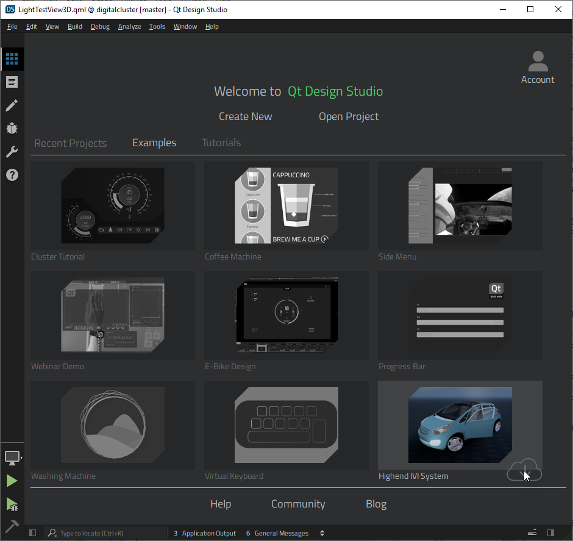

Install Qt Design Studio
To begin, create a Qt Account. This account gives you access to a web portal to manage your licenses and download the standalone Qt Design Studio package.
Qt Design Studio is also available as a free community version. It does not include the Qt Bridge asset export and import tools for Photoshop, Sketch, and Figma. However, you can purchase Qt Bridge separately at Qt Marketplace.
The Qt Design Studio installer installs and configures all the modules and tools you need to design UIs and preview them on the desktop. After the installation, you can start exploring Qt Design Studio by opening examples, following tutorials, watching videos, and reading the Qt Design Studio Manual.
